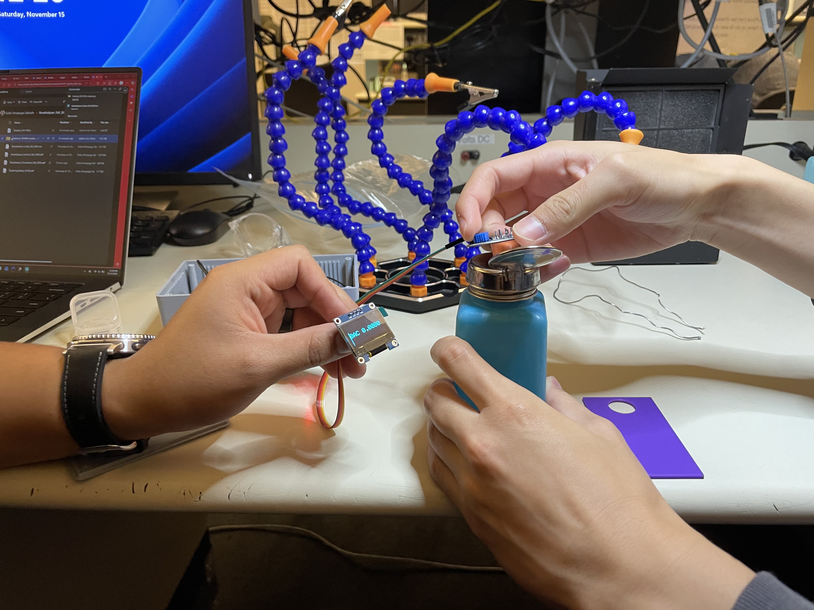

New to electronics? In this hands-on breathalyzer workshop, you'll learn the basics by building a simple device using Arduino and sensors. We'll cover how circuits work, how a sensor detects alcohol, and how code and hardware work together. You'll get experience wiring, light soldering, and testing your project—no prior experience needed. This workshop pairs well with Cal Poly SLO classes like EE 112, EE 151, and CPE 133.
